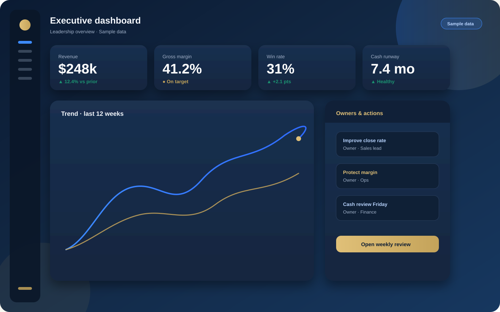

Data lives in silos
Revenue in accounting, leads in the CRM, ad spend in marketing platforms — no single trustworthy view.
DataDashOS
The operating system for business performance — KPIs, weekly reviews, and an AI coach built for owner-led companies.

The problem
Accounting, CRM, marketing, and projects live apart. Reporting is manual, late, and rarely becomes action.
Revenue in accounting, leads in the CRM, ad spend in marketing platforms — no single trustworthy view.
Most dashboards show numbers. Few explain what changed, why it matters, or what to do this week.
Without a weekly review habit, problems surface weeks too late — after cash and momentum are already gone.
Operator-built proof
Not a theory deck — DataDashOS grew from running Simmitri day to day.
Product
Analytics, KPIs, weekly execution, and an executive AI coach — designed to work as a single loop.
Executive, marketing, sales, and operations views with prior-period and year-over-year comparisons, templates, and dark/light mode.
Guided onboarding with industry blueprints, scorecards, targets, trends, CSV import, notes, and AI forecasts.
AI-written weekly summaries, recommendations turned into action items, notifications, and branded reports.
CEO scorecard, decision briefs, and coach chat grounded in your KPIs — with nine specialist roles from finance to safety.
Built for QuickBooks Online, GoHighLevel, and Google Ads, with connection status, sync logs, and privacy-safe demo mode.
Workspaces, invitations, roles, admin controls, audit logs, and white-label branding per workspace.
How it works
A four-step operating rhythm that replaces spreadsheet archaeology with weekly clarity.
Link your business tools or import a CSV. Status and sync logs keep the pipeline trustworthy.
Track the KPIs that matter for your industry with targets, trends, and scorecards.
Get an AI-written weekly review of what changed — speakable, shareable, and grounded in your data.
Turn recommendations into owned action items with notifications and branded reports.
Origin story
DataDashOS grew out of running Simmitri, Inc., a Northern California solar and roofing company with 32 years in business. We built the tool we needed to run our own company — and we are bringing it to other owner-led businesses.
That operator DNA shapes every module: practical KPIs, a weekly cadence, and coaching that respects how owners actually decide.
Geographic roots
While DataDashOS serves owner-led businesses nationally, its product judgment comes from decades of field operations, permitting realities, and cash-flow discipline in Northern California markets.
FAQ
Short, citable answers designed for humans, search snippets, and AI overviews.
Request a walkthrough or send a short note — we help owner-led teams find clarity in their weekly numbers.
Simmitri, Inc. · 32 years operating · Northern California